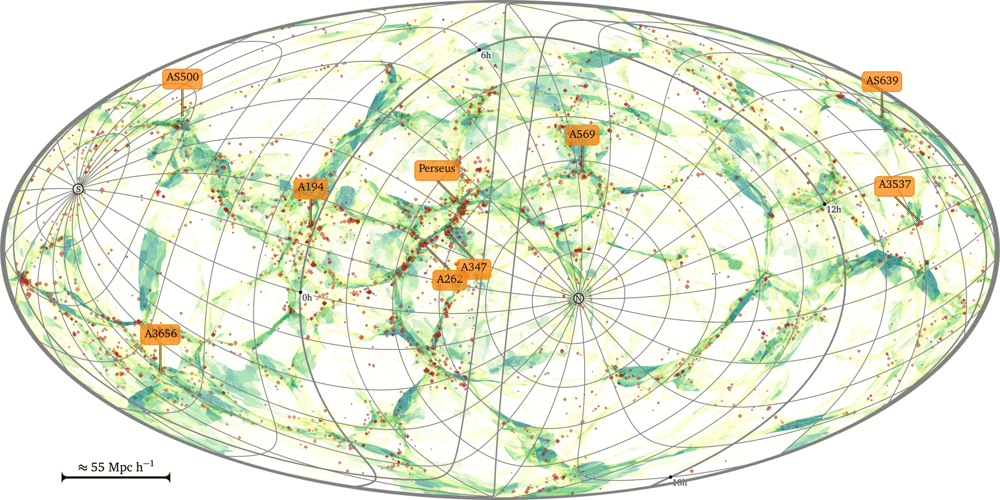

A little bit about complex systems
Johan Hidding
Complex Systems
How I got interested
Thesis work into origins of complexity in Universe
Hidding et al ’14
Utrecht Summerschool
General curiosity
A generic shift in science
Cosmology

Cosmic web
Complex systems … and
Physics
Biology
Economics
Meteorology
Sociology
Boundaries between sciences
From biochemistry to cellbiology
From taxonomy to ecology
From psychology to sociology
What is a complex system?
Simple microscopic rules of interaction
Emergent large scale behaviour:
scaling laws
pattern formation
synchronisation
self-replication
co-evolution
non-linear / chaotic
robustness
path-dependence
Science
Differential equations, (statistical physics)
Statistical inference
“Science” in a computational universe
Set ground rules
Run simulations
\(\leftarrow\)
NLeSC! everyone knows
Identify large-scale behaviour
\(\leftarrow\)
NLeSC?
New concepts
Match with nature, gain insight!
\(\leftarrow\)
NLeSC?
Increasing complexity
From physics
Simple pendulum
Double pendulum: chaos
demo
Dynamics on networks
synchronisation:
metronomes
lampyridae:
demo
Ecology
Start out with one-dimensional model (predator/prey type)
Add spatial component
Pattern formation
self organisation
Rietkerk ’04
That’s it (for now)